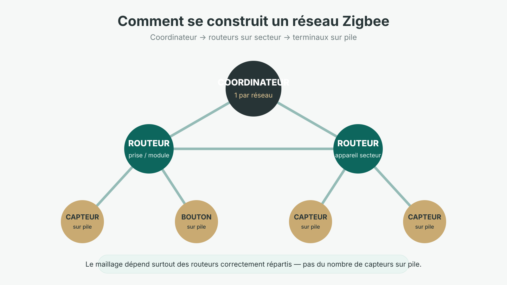
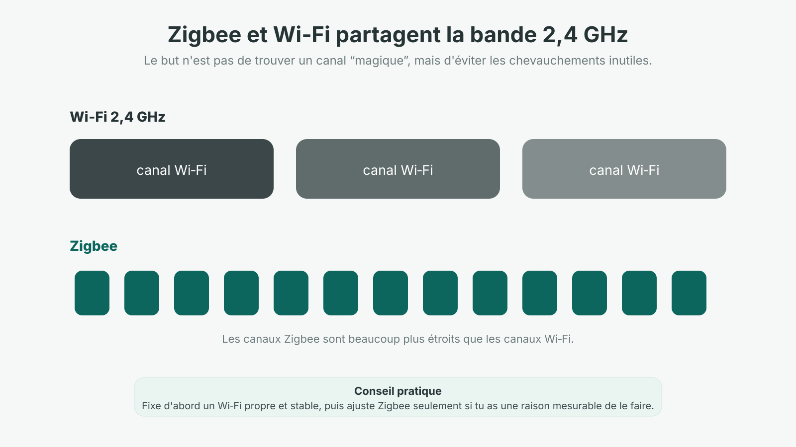
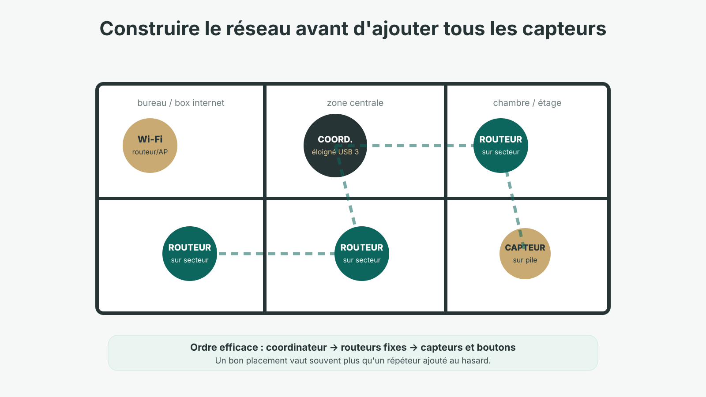

Zigbee est souvent présenté comme un protocole simple : on ajoute une clé ou une passerelle, on appaire quelques capteurs et le réseau se construit tout seul. C’est vrai jusqu’à un certain point. Dans une petite installation, tout peut fonctionner immédiatement. Mais dès que la maison s’agrandit, que les murs se multiplient ou que le Wi‑Fi 2,4 GHz est chargé, la qualité du réseau dépend surtout de son architecture.
DomoRepère s’appuie notamment sur une installation Home Assistant avec des équipements Zigbee. Dans ce type d’environnement, le problème n’est généralement pas seulement « Zigbee ne porte pas assez loin ». Il faut d’abord regarder où se trouve le coordinateur, quels appareils jouent réellement le rôle de routeur et comment le 2,4 GHz est occupé.
1. Zigbee, c’est quoi exactement ?
Zigbee est une technologie radio basse consommation basée sur IEEE 802.15.4 et conçue pour de petits échanges de données : état d’une porte, température, commande d’un éclairage, position d’un volet ou déclenchement d’un scénario. En résidentiel, la majorité des équipements Zigbee utilisent la bande 2,4 GHz.
Contrairement au Wi‑Fi, Zigbee n’a pas besoin de transporter une vidéo ou plusieurs centaines de mégabits. Son intérêt est ailleurs : consommation réduite, réseau maillé et équipements simples capables de rester plusieurs mois ou années sur pile selon leur usage.
Zigbee 3.0 a unifié de nombreux profils historiques, mais le logo Zigbee ne garantit pas que toutes les fonctions d’un appareil seront exposées de la même manière sur toutes les passerelles. La radio peut être compatible alors que certaines fonctions nécessitent encore une prise en charge spécifique du logiciel ou du fabricant.
2. Coordinateur, routeur, terminal : les trois rôles à connaître
Le coordinateur
Il crée le réseau, choisit ses paramètres et en constitue le point de départ. Une passerelle constructeur peut intégrer son propre coordinateur. Avec Home Assistant, il peut s’agir d’un adaptateur USB ou réseau utilisé par ZHA, Zigbee2MQTT ou une autre solution.
Un réseau Zigbee n’a qu’un coordinateur. Cela ne veut pas dire qu’il doit communiquer directement avec tous les capteurs : c’est précisément le rôle du maillage.
Les routeurs Zigbee
Les routeurs relaient les messages entre les appareils. Beaucoup de prises, ampoules et micromodules alimentés en permanence peuvent jouer ce rôle, mais il ne faut pas en déduire que tout appareil sur secteur route forcément pour tous les autres : le comportement dépend du produit et de son implémentation.
Les terminaux sur pile
Les capteurs, boutons et télécommandes sur pile sont généralement des terminaux. Ils peuvent dormir longtemps entre deux transmissions pour économiser l’énergie. C’est excellent pour l’autonomie, mais cela signifie qu’ils ne constituent pas la colonne vertébrale du mesh.

3. Comment fonctionne réellement le réseau maillé Zigbee ?
Dans un réseau maillé, un appareil n’a pas forcément besoin d’atteindre directement le coordinateur. Les routeurs peuvent transmettre les messages de proche en proche. C’est ce qui permet de couvrir progressivement une maison sans demander au coordinateur une puissance radio démesurée.
Mais « mesh » ne signifie pas « portée infinie ». Une dalle béton, un coffret métallique, un mur épais, une baie technique ou un routeur Zigbee débranché peuvent créer une vraie rupture dans le réseau.
4. Jusqu’où porte Zigbee dans une maison ?
Il n’existe pas de chiffre unique sérieux pour une habitation. La portée dépend de la puissance radio, des antennes, du bruit radio, des matériaux du bâtiment et surtout de la possibilité de passer par des routeurs.
Une portée annoncée en champ libre ne décrit pas une maison avec murs porteurs, plancher béton et tableau électrique métallique. Il vaut donc mieux raisonner en zones de couverture qu’en mètres.
- Une pièce ouverte : la liaison directe peut être excellente.
- Deux pièces séparées par plusieurs murs : un routeur intermédiaire peut devenir utile.
- Un étage ou une dépendance : mieux vaut prévoir une vraie continuité de routeurs plutôt qu’espérer que le coordinateur traverse tout le bâtiment.
- Un appareil enfermé dans un coffret métallique : la radio peut être fortement atténuée, quel que soit le protocole.
5. Zigbee et Wi‑Fi : pourquoi les interférences comptent
Zigbee et le Wi‑Fi 2,4 GHz utilisent la même bande ISM. Le Wi‑Fi occupe des canaux beaucoup plus larges ; selon la configuration, il peut donc chevaucher plusieurs canaux Zigbee. Cela ne veut pas dire qu’ils ne peuvent pas cohabiter — des millions d’installations le font — mais une mauvaise configuration peut dégrader la réception.

Quel canal Zigbee choisir ?
Le standard 2,4 GHz propose 16 canaux Zigbee. Dans sa documentation actuelle, Home Assistant recommande généralement de privilégier les canaux 15, 20 ou 25 pour limiter les problèmes d’interopérabilité, tout en rappelant que le meilleur choix dépend aussi du Wi‑Fi présent dans le logement.
Je ne changerais donc pas le canal Zigbee « pour optimiser » un réseau qui fonctionne. Un changement de canal est une intervention à réserver à un problème réel et identifié.
6. Où placer le coordinateur Zigbee ?
Le coordinateur mérite autant d’attention que le choix de la clé. Pour un adaptateur USB, la documentation Home Assistant recommande notamment de l’éloigner des sources d’interférences et des périphériques USB 3.x, idéalement avec une rallonge USB correctement blindée et une connexion USB 2.0 lorsque c’est possible.
- Évite de le coller au routeur ou au point d’accès Wi‑Fi.
- Éloigne-le des mini-PC, SSD externes, hubs USB 3 et alimentations.
- Évite les coffrets métalliques.
- Teste plusieurs positions : quelques dizaines de centimètres peuvent parfois changer beaucoup de choses.
- Ne cherche pas forcément le « centre géométrique » de la maison : cherche surtout une position propre radioélectriquement et reliée à plusieurs routeurs.
7. Comment construire un bon réseau Zigbee étape par étape
- Installe correctement le coordinateur. Sa position doit être saine avant de diagnostiquer le reste.
- Fixe ton plan radio. Vérifie le Wi‑Fi 2,4 GHz avant de modifier le canal Zigbee.
- Pose d’abord quelques routeurs fiables. Prises ou modules alimentés en permanence, répartis dans les zones stratégiques.
- Ajoute ensuite les capteurs sur pile. Ils pourront s’appuyer sur le maillage déjà présent.
- Teste les zones difficiles. Étage, garage, dépendance, tableau, murs épais.
- N’ajoute un routeur supplémentaire que s’il répond à une faiblesse réelle.

8. Pourquoi des appareils Zigbee se déconnectent-ils ?
Une déconnexion n’a pas une cause unique. Avant de supprimer puis réappairer l’appareil, je vérifierais dans cet ordre :
- pile réellement en bon état ;
- routeur intermédiaire débranché ou coupé par un interrupteur ;
- coordinateur déplacé ou nouvel équipement USB/Wi‑Fi installé à proximité ;
- modification récente des canaux radio ;
- zone devenue trop limite après déplacement d’un appareil ;
- firmware du coordinateur ou du périphérique ;
- compatibilité imparfaite avec la plateforme utilisée.
Les cartes de topologie et les valeurs de qualité de lien sont utiles pour comprendre un réseau, mais je ne les utiliserais pas comme un classement absolu entre appareils. Les valeurs peuvent varier selon les fabricants et les moments de mesure.
9. Zigbee avec Home Assistant : ZHA ou Zigbee2MQTT ?
Les deux approches permettent de piloter un réseau Zigbee avec Home Assistant, mais ce guide n’a pas vocation à refaire leur comparatif complet. Le point essentiel ici est qu’aucun logiciel ne compense une mauvaise implantation radio.
ZHA est intégré directement à Home Assistant. Zigbee2MQTT s’appuie sur MQTT et propose sa propre couche de gestion et de compatibilité. Le choix mérite un article dédié, mais dans les deux cas les fondamentaux restent les mêmes : adaptateur compatible, firmware à jour, coordinateur bien placé et routeurs correctement répartis.
10. Zigbee 3.0 veut-il dire « tout est compatible » ?
Non. Zigbee 3.0 a beaucoup amélioré l’interopérabilité, mais un appareil peut exposer des fonctions spécifiques ou nécessiter une prise en charge particulière dans ZHA, Zigbee2MQTT ou une passerelle constructeur.
Avant achat, vérifie donc trois choses : que l’appareil utilise bien Zigbee, qu’il est reconnu par ta plateforme et que les fonctions qui t’intéressent sont réellement exposées. « Appairage réussi » et « intégration complète » ne sont pas toujours synonymes.
11. Dans quels cas je choisirais Zigbee aujourd’hui ?
Zigbee reste particulièrement cohérent pour une installation riche en capteurs, boutons, prises, modules et automatismes. Le choix de matériel est vaste et la consommation convient bien aux périphériques sur pile.
Je le choisirais surtout si je veux construire progressivement un réseau local et dense, avec une plateforme capable de centraliser les équipements. En revanche, je n’ajouterais pas Zigbee uniquement parce qu’il est populaire si le logement possède déjà un écosystème cohérent qui répond au besoin.
Pour comparer Zigbee avec Z-Wave, Wi‑Fi, Thread et Matter, le bon point de départ reste notre comparatif des protocoles domotiques. Et si ton besoin concerne spécifiquement Z-Wave, le guide Z-Wave 2026 va beaucoup plus loin.
Si tu cherches ensuite des prises, capteurs ou modules, garde l’ordre DomoRepère : besoin → compatibilité → architecture → matériel.
Lien partenaire : DomoRepère peut percevoir une commission sur certains achats, sans surcoût pour toi.
Explorer le matériel Zigbee chez DomadooQuestions fréquentes
Un appareil Zigbee sur pile sert-il de répéteur ?
En général non. Les appareils sur pile dorment une grande partie du temps pour économiser leur énergie. Le maillage repose surtout sur les appareils alimentés en permanence qui implémentent le rôle de routeur.
Quel canal Zigbee choisir ?
Il n’existe pas de canal parfait pour toutes les maisons. Home Assistant recommande généralement 15, 20 ou 25 pour limiter les problèmes d’interopérabilité, mais il faut aussi tenir compte du Wi‑Fi 2,4 GHz présent sur place.
Faut-il Internet pour utiliser Zigbee ?
Non pour le transport Zigbee lui-même. Le réseau radio peut fonctionner localement. La dépendance à Internet vient éventuellement de la passerelle ou du service utilisé derrière.
Une prise Zigbee améliore-t-elle toujours le maillage ?
Pas automatiquement. Beaucoup de prises alimentées sont des routeurs utiles, mais il faut vérifier le comportement réel du modèle et sa compatibilité avec le réseau utilisé.
Sources techniques principales
- Home Assistant — Zigbee Home Automation (ZHA), canaux et interférences
- Connectivity Standards Alliance — Zigbee
- Silicon Labs — coexistence Zigbee / Wi‑Fi
En résumé
Un bon réseau Zigbee n’est pas celui qui possède le coordinateur le plus puissant. C’est celui dont le coordinateur est bien placé, dont les routeurs sont correctement répartis et dont le plan radio cohabite proprement avec le Wi‑Fi.
Si tu dois retenir une méthode : coordinateur propre → routeurs fixes → capteurs → mesure → correction. C’est beaucoup plus fiable que d’ajouter des répéteurs au hasard après les premières déconnexions.